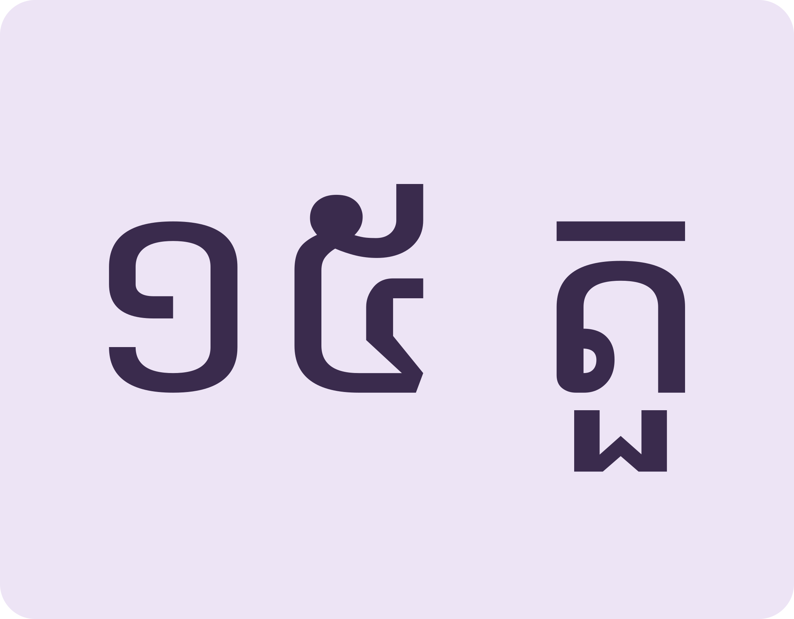
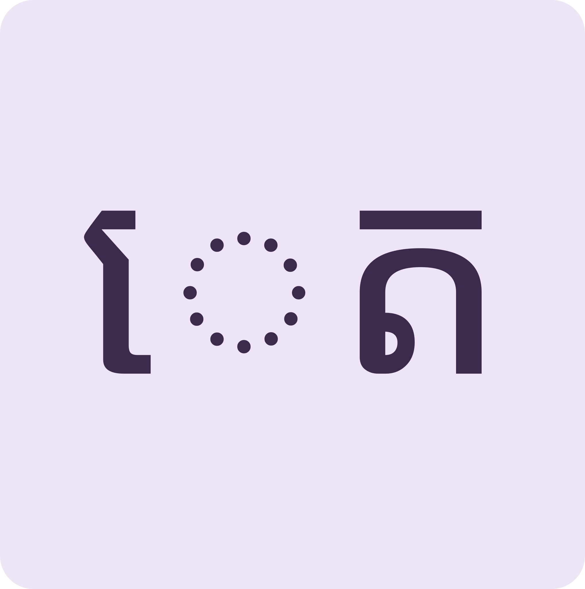
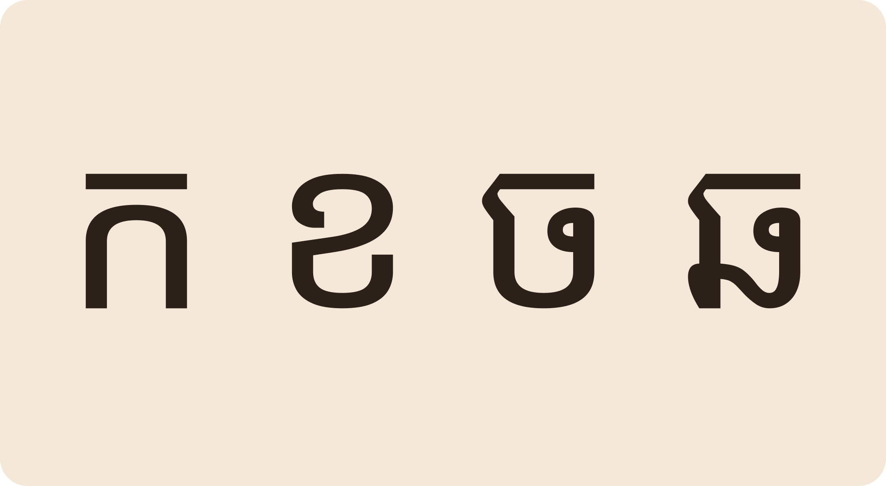
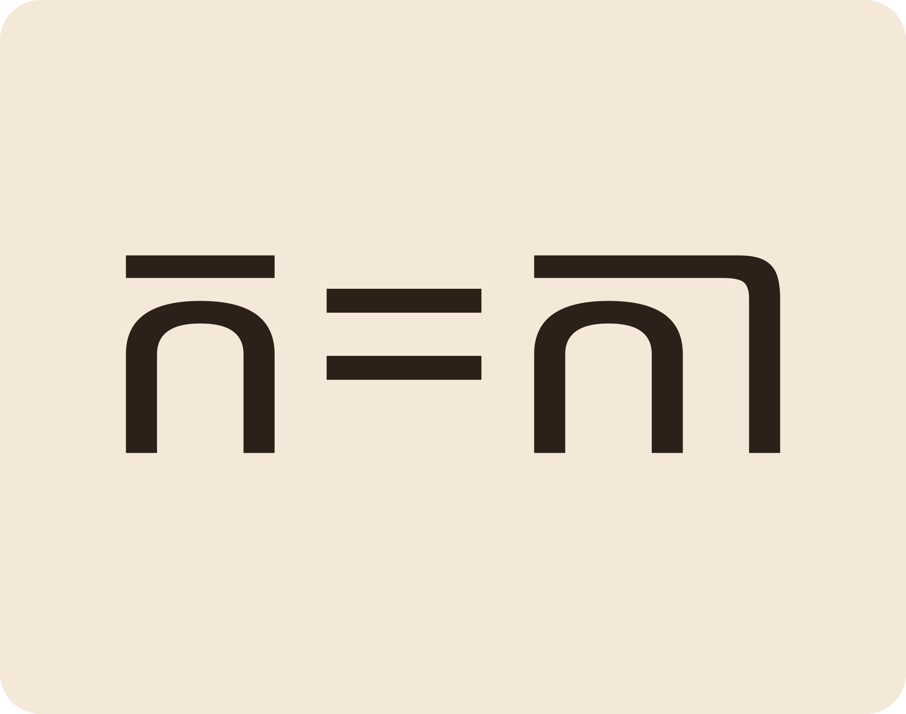
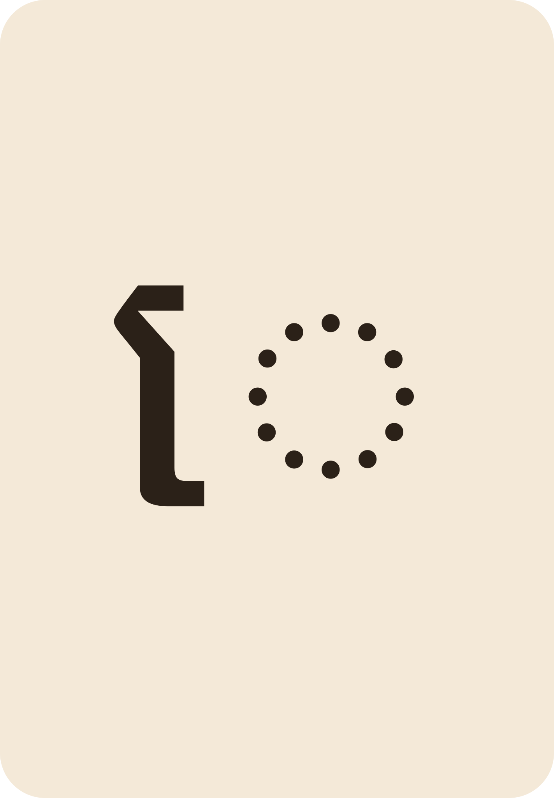
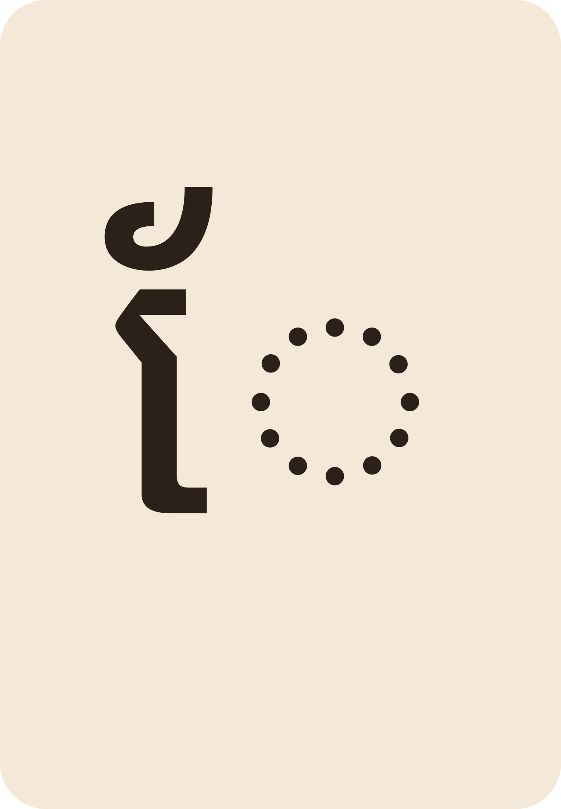
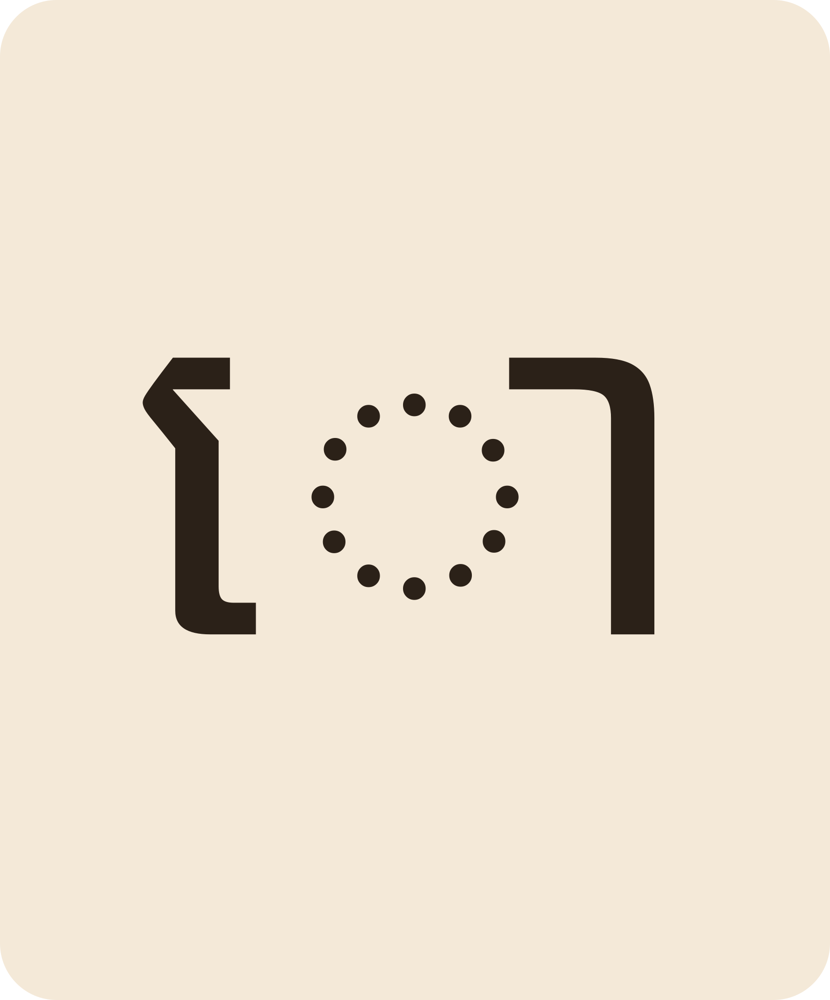
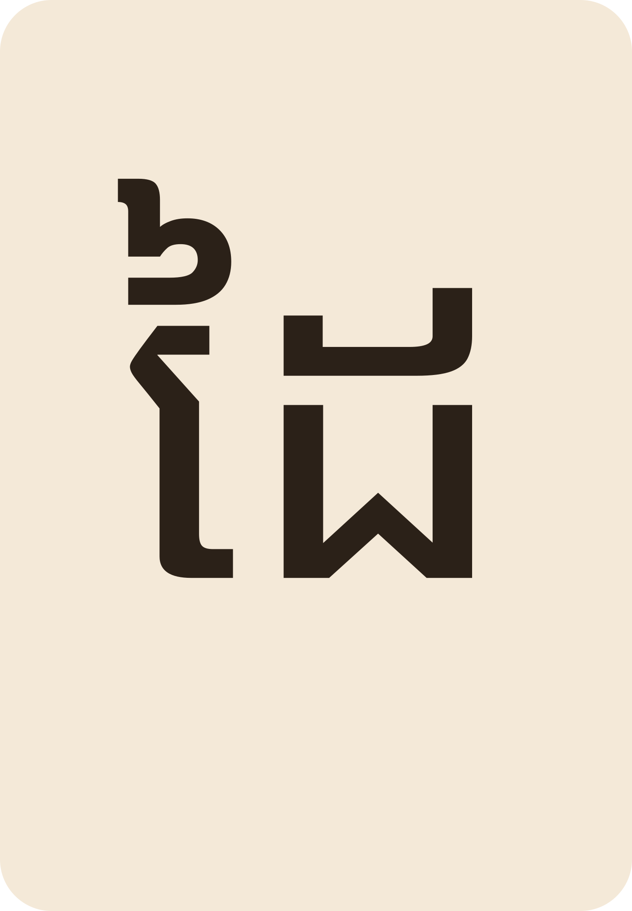
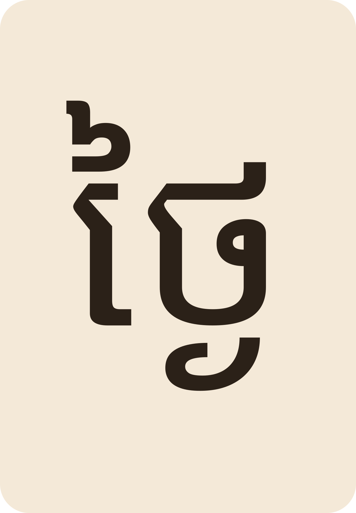
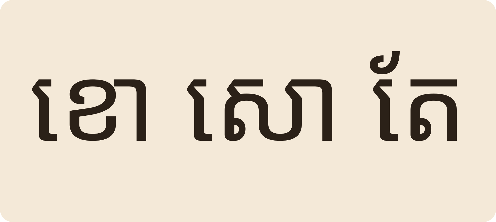

01ពួកអ · The a-familyពួកអ
ព្យញ្ជនៈពួក «អ» មាន ១៥ តួ គឺ ក ខ ច ឆ ដ ឋ ណ ត ថ ប ផ ស ហ ឡ អ។
The “a” family has fifteen letters: ក ខ ច ឆ ដ ឋ ណ ត ថ ប ផ ស ហ ឡ អ.
The “a” consonants meet the vowels · មេរៀនទី ១ · Lesson 1 of ភាសាខ្មែរ កម្រិត ១
អក្សរខ្មែរមានព្យញ្ជនៈ ៣៣ តួ បែងជាពីរពួក។ ពួកទីមួយហៅថា «ពួកអ» ព្រោះវាមានសំឡេង «អ» ជាប់ខាងក្នុង។

ពួកអ ១៥ តួFifteen letters in the a-family
ស្រៈខ្លះនៅពីមុខSome vowels are written in frontLearn the fifteen a-family letters, see how vowels attach, then read real one-syllable words.

Space listen · ← → move · K show text
ព្យញ្ជនៈពួក «អ» មាន ១៥ តួ គឺ ក ខ ច ឆ ដ ឋ ណ ត ថ ប ផ ស ហ ឡ អ។
The “a” family has fifteen letters: ក ខ ច ឆ ដ ឋ ណ ត ថ ប ផ ស ហ ឡ អ.

ព្យញ្ជនៈនៅម្នាក់ឯង មាន «អា» ជាប់ខាងក្នុង ដូចជា ក = កា ត = តា។
A bare consonant already carries -aa: ក reads “kaa”, ត reads “taa”.

ស្រៈ «េ» សរសេរនៅពីមុខព្យញ្ជនៈ ប៉ុន្តែអាននៅក្រោយ ដូចជា តេ។
The vowel េ is written before the letter but read after it: តេ = tae.

ស្រៈ «ែ» នៅពីលើ ដូចជា តែ ផែ ខែ។
The vowel ែ sits on top: តែ tea, ផែ sandbar, ខែ moon/month.

ស្រៈ «ោ» នៅពីលើដែរ ដូចជា ខោ សោ តោ។
The vowel ោ also sits on top: ខោ trousers, សោ padlock, តោ lion.

ពាក្យថ្មី «ដៃ» ផ្សំពី ដ + ៃ។ សូមអានក្នុងចិត្ត។
New word ដៃ “hand”: ដ + ៃ. Read it in your head.

ពាក្យ «ថ្ងៃ» មានជើងអក្សរតូចនៅខាងក្រោម ប៉ុន្តែអានថា ថាំង។
In ថ្ងៃ “day” a small subscript letter hides below; the word still reads “thngai”.

សូមអានឃ្លា៖ «ប៉ាទិញខោ ម៉ែផឹកតែ»។
Read the phrase: “Pa tikh khao, me phuek tae” — Dad buys trousers, Mum drinks tea.
ពួកវានៅខុសគ្នាពួក។ «ក» ជាពួកអ «គ» ជាពួកអ៊ សំឡេងស្រៈក៏ប្លែងទៅ។
They belong to different families. ក is a-family, គ is â-family — the vowel sound changes with it.
សំឡេងពួកព្យញ្ជនៈកំណត់សំឡេងស្រៈទាំងអស់នៅក្នុងពាក្យ។
ទេ។ អានព្យញ្ជនៈមុន រួចស្រៈ «េ» ក្រោយ ដូចជា «តែ» អាន ត-ែ។
No. Read the consonant first, then េ: តែ is “t” + “ae”.
មិនចាំបាច់ចាំភ្លាមទេ។ អានរាល់ថ្ងៃតិចៗ ពាក្យនឹងជួយឱ្យចាំខ្លួនឯង។
Not all at once. Read a little every day; the words will make you remember.
ខោ សោ តោ គោ នៅ។
ខោ trousers, សោ lock, តោ lion, គោ cow.
អាន «ថាំង»។ និយាយពីជើងអក្សរនៅមេរៀនទី ៥។
Read it “thngai”. Subscript letters get their own lesson (Lesson 5).
Tap a word's play button to hear it. Hide one side, then recall it before you tap to check.
ព្យញ្ជនៈពួក «អ» មាន ១៥ តួ គឺ ក ខ ច ឆ ដ ឋ ណ ត ថ ប ផ ស ហ ឡ អ។ ព្យញ្ជនៈនៅម្នាក់ឯង មាន «អា» ជាប់ខាងក្នុង ដូចជា ក = កា ត = តា។
The “a” family has fifteen letters: ក ខ ច ឆ ដ ឋ ណ ត ថ ប ផ ស ហ ឡ អ. A bare consonant already carries -aa: ក reads “kaa”, ត reads “taa”.
ស្រៈ «េ» សរសេរនៅពីមុខព្យញ្ជនៈ ប៉ុន្តែអាននៅក្រោយ ដូចជា តេ។ ស្រៈ «ែ» នៅពីលើ ដូចជា តែ ផែ ខែ។ ស្រៈ «ោ» នៅពីលើដែរ ដូចជា ខោ សោ តោ។
The vowel េ is written before the letter but read after it: តេ = tae. The vowel ែ sits on top: តែ tea, ផែ sandbar, ខែ moon/month. The vowel ោ also sits on top: ខោ trousers, សោ padlock, តោ lion.
ពាក្យថ្មី «ដៃ» ផ្សំពី ដ + ៃ។ សូមអានក្នុងចិត្ត។ ពាក្យ «ថ្ងៃ» មានជើងអក្សរតូចនៅខាងក្រោម ប៉ុន្តែអានថា ថាំង។ សូមអានឃ្លា៖ «ប៉ាទិញខោ ម៉ែផឹកតែ»។
New word ដៃ “hand”: ដ + ៃ. Read it in your head. In ថ្ងៃ “day” a small subscript letter hides below; the word still reads “thngai”. Read the phrase: “Pa tikh khao, me phuek tae” — Dad buys trousers, Mum drinks tea.
Q. ហេតុអ្វី «ក» និង «គ» សរសេរស្ទើរដូចគ្នា?
Q. Why do ក and គ look almost the same?
A. ពួកវានៅខុសគ្នាពួក។ «ក» ជាពួកអ «គ» ជាពួកអ៊ សំឡេងស្រៈក៏ប្លែងទៅ។
A. They belong to different families. ក is a-family, គ is â-family — the vowel sound changes with it.
Q. «េ» សរសេរពីមុខ តើអានពីមុខដែរទេ?
Q. េ is written first — do I read it first?
A. ទេ។ អានព្យញ្ជនៈមុន រួចស្រៈ «េ» ក្រោយ ដូចជា «តែ» អាន ត-ែ។
A. No. Read the consonant first, then េ: តែ is “t” + “ae”.
Q. តើខ្ញុំត្រូវចាំពួកអទាំង ១៥ តួមុនគេទេ?
Q. Must I memorise all fifteen letters first?
A. មិនចាំបាច់ចាំភ្លាមទេ។ អានរាល់ថ្ងៃតិចៗ ពាក្យនឹងជួយឱ្យចាំខ្លួនឯង។
A. Not all at once. Read a little every day; the words will make you remember.
Q. ពាក្យណាប្រើស្រៈ «ោ» ខ្លះ?
Q. Which words use ោ?
A. ខោ សោ តោ គោ នៅ។
A. ខោ trousers, សោ lock, តោ lion, គោ cow.
Q. «ថ្ងៃ» អានដូចម្តេច?
Q. How do I read ថ្ងៃ?
A. អាន «ថាំង»។ និយាយពីជើងអក្សរនៅមេរៀនទី ៥។
A. Read it “thngai”. Subscript letters get their own lesson (Lesson 5).
ជួយអានឱ្យខ្ញុំស្តាប់ផង។
Please read this aloud for me.
ពាក្យនេះអានដូចម្តេច?
How is this word read?
Say it in your head first, then tap the box to check.